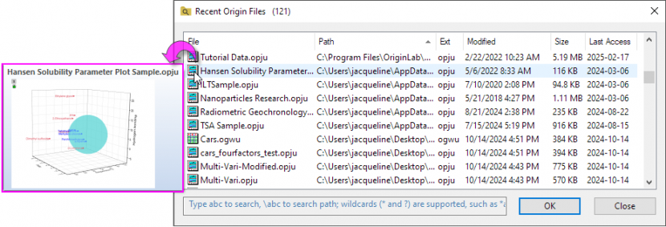
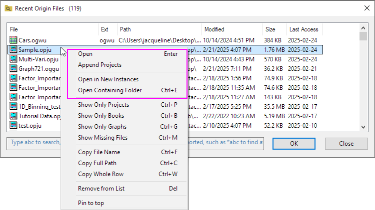
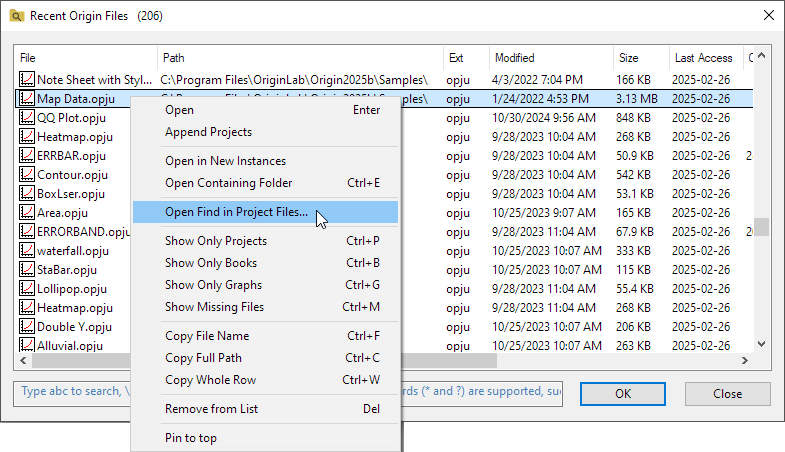
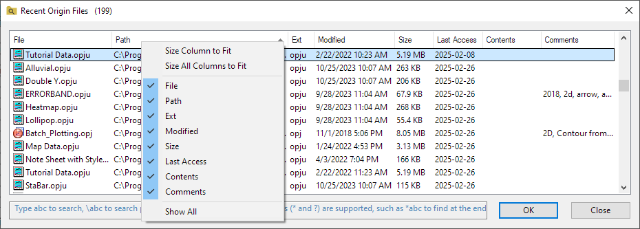
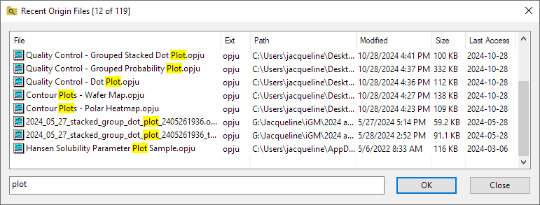
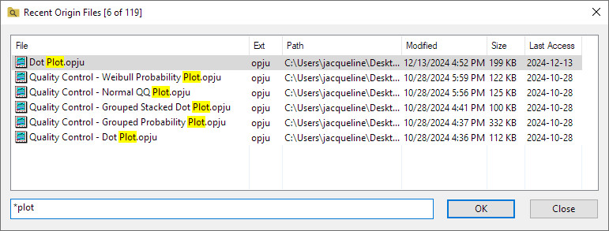
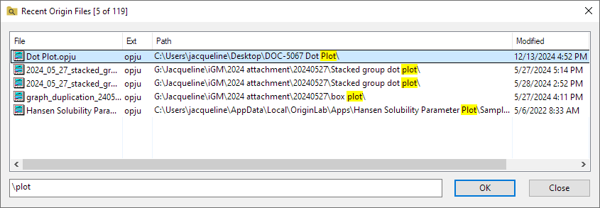
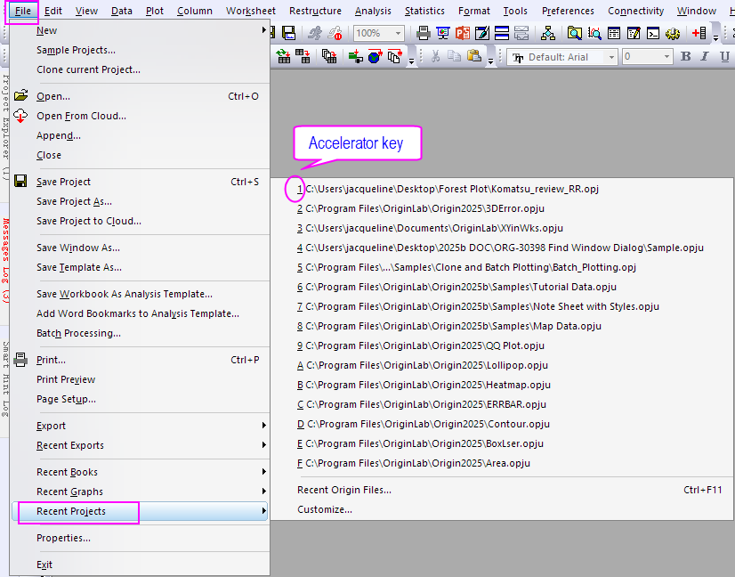
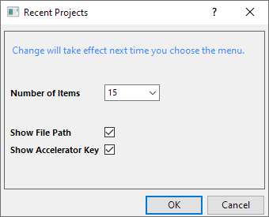

Zuletzt verwendete Origin-Dateien
Recent-Origin-Files
Der Dialog Zuletzt verwendete Origin-Dateien zeigt die Origin-Projektdateien (*.opj(u)) und Unterfensterdateien (*.ogw(u);*.ogg(u);*.ogm(u)). Er hilft Ihnen dabei, durch die zuletzt verwendeten Origin-Dateien zu navigieren und sie zu finden.
Um den Dialog Zuletzt verwendete Origin-Dateien zu öffnen:
- Wählen Sie Datei: Zuletzt verwendete Projekte: Zuletzt verwendete Origin-Dateien im Origin-Menü.
oder
- Klicken Sie doppelt auf den grauen Arbeitsbereich von Origin.
oder
- Klicken Sie mit der rechten Maustaste auf die leere Fläche der Origin-Bedienoberfläche und wählen Sie Zuletzt verwendete Origin-Dateien im Kontextmenü.
oder
- Drücken Sie die Tastenkombination Strg+F11 in Origin.
oder
- Führen Sie das folgende LabTalk-Skript im Skriptfenster aus:.
doc -mrf;
 |
Verwenden Sie Systemvariablen, um zu steuern, ob ein Doppelklick in den Arbeitsbereich den Dialog Zuletzt verwendete Origin-Dateien und Strg + Doppelklick den Projektbrowser öffnet.
- @DDW=0 (Standard): Beide Doppelklick-Kombis werden unterstützt, um den Dialog Zuletzt verwendete Origin-Dateien und den Projektbrowser zu öffnen.
- @DDW=1: Beide Doppelklick-Kombis werden deaktiviert.
- @DDW=2 (Standard): Der Doppelklick zum Öffnen des Dialogs Zuletzt verwendete Origin-Dateien wird deaktiviert, aber Strg+Doppelklick zum Öffnen des Projektbrowsers ist aktiviert.
|
Vorschau
Wenn der Cursor auf einem Origin-Dateinamen platziert ist, zeigt er eine Popup-Vorschau für die Grafik/Arbeitsmappe in dem Projekt mit dem Projektnamen an.

Dateien öffnen
- Klicken Sie doppelt auf die Zeile, um die Origin-Datei zu öffnen. Wenn die Datei ein Projekt ist, wird das aktuelle Projekt geschlossen, um diese ausgewählte Datei zu öffnen. Wenn die Datei eine Unterfensterdatei ist, wird sie im aktuellen Projekt geöffnet.
- Klicken Sie mit der rechten Maustaste auf die Datei:
- Wählen Sie Öffnen, um die Datei zu öffnen. Wenn die Datei ein Projekt ist, wird das aktuelle Projekt geschlossen, um diese ausgewählte Datei zu öffnen. Wenn die Datei eine Unterfensterdatei ist, wird sie im aktuellen Projekt geöffnet.
- Wählen Sie Projekt anhängen, um die Datei an den Ordner der ersten Ebene des aktuellen Projekts anzuhängen.
- Wählen Sie In neuer Instanz öffnen, um die Datei in einem neuen Projekt zu öffnen.
- Wählen Sie Übergeordneten Ordner öffnen, um den Ordner zu öffnen, in dem die Datei gespeichert ist.

In Projektdateien suchen
Klicken Sie mit der rechten Maustaste auf die Datei und wählen Sie In Projektdateien suchen... im Kontextmenü, um den Dialog In Projektdateien suchen zu öffnen.

Angezeigte Dateien festlegen
Um die angezeigten Dateien festzulegen, können Sie mit der rechten Maustaste auf eine Datei (Dateien) oder auf den leeren Bereich der Dateiliste klicken und dann die folgende Option auswählen oder die Tastenkombination verwenden.
- Nur Projekte zeigen (Strg+P)
- Nur Mappen zeigen (Strg+ B)
- Nur Grafiken zeigen (Strg+ G)
- Fehlende Dateien zeigen (Strg+M): Standardmäßig werden fehlende Dateien nicht im Dialog gezeigt. Aktivieren Sie diese Option, um sie zu zeigen. Im Fall der fehlenden Dateien unterstützt es auch das Öffnen ihres vorherigen Speicherorts.
Informationen der zuletzt verwendeten Dateien kopieren
Um die Informationen der zuletzt verwendeten Dateien zu kopieren, können Sie mit der rechten Maustaste auf die Datei (Dateien) klicken und dann die folgende Option auswählen oder die Tastenkombination verwenden.
- Dateiname kopieren (Strg+F)
- Vollständigen Pfad kopieren (Strg+C)
- Ganze Zeile kopieren (Strg+W)
Datei aus dieser Liste entfernen
Wählen Sie eine oder mehrere Dateien, klicken Sie mit der rechten Maustaste auf sie und wählen Sie Aus Liste entfernen, um die Datei(en) in diesem Dialog zu entfernen.
|
Sie können die Tasten Strg+A verwenden, um alle Dateien in der Liste auszuwählen. Es wird auch die Verwendung von Strg+Z und Strg+Y unterstützt, um diese Operation rückgängig zu machen und zu wiederholen.
|
Dateien oben festpinnen
Wählen Sie eine oder mehrere Dateien, klicken Sie mit der rechten Maustaste auf sie und wählen Sie Oben festpinnen, um die Datei(en) in diesem Dialog oben anzupinnen. Der Hintergrund der Zeilen dieser Dateien wird mit gelber Farbe gefüllt.
Klicken Sie mit der rechten Maustaste auf die oben festgepinnten Dateien und wählen Sie Lösen. Die Dateien folgen dann der Sortierung nach Spalte in diesem Dialog.
Anzeige oder Ordnung der Spalten für die Liste ändern
- Klicken Sie mit der rechten Maustaste auf den Bereich des Spaltenkopfs und aktivieren bzw. deaktivieren Sie eine Überschrift, die angezeigt oder ausgeblendet werden soll.

- Um die vollständigen Informationen von jeder Zeile in einer Spalte anzuzeigen, können Sie mit der rechten Maustaste auf den Spaltenkopf klicken und Spaltengröße anpassen auswählen. Wenn Sie auf Größe aller Spalten anpassen klicken:
- Ziehen Sie an den Spaltenüberschriften, um sie neu zu ordnen.
- Das Anpassen der Spaltenköpfe wird für die später Anwendung beibehalten.
In zuletzt verwendete Origin-Dateien suchen
- Geben Sie die Zeichenkette ein, um die Dateien nach Dateiname zu suchen.

- Platzhalter (* und ?) werden unterstützt wie *abc, um nach Ende zu suchen.

- Verwenden Sie \Abc,, um nach der Zeichenkette im Pfad zu suchen.

Menü der zuletzt verwendeten Origin-Dateien
Wenn Sie im Menü Datei: Zuletzt verwendete Projekte wählen, finden Sie die 15 zuletzt verwendeten Proejekte aufgelistet im Ausklappmenü. Klicken Sie auf den Projektnamen, um das zuletzt verwendete Projekt einfach erneut zu öffnen. Wenn dieses Menü erweitert ist, können Sie auf die Tastenkombination des Projekts drücken, um es erneut zu öffnen.

Ausklappmenü benutzerdefiniert anpassen
Wählen Sie Benutzerdefiniert anpassen... im Kontextmenü, um den Dialog Zuletzt verwendete Projekte zu öffnen. Sie können die Anzahl der zuletzt verwendeten Projekte, die im Menü angezeigt werden, ändern und festlegen, ob der Dateipfad und die Tastenkombination der Dateien gezeigt wird. Alle Änderungen werden beim nächsten Verwenden des Menüs wirksam.

|
- Wenn der Dateipfad im Menü verborgen ist, platzieren Sie den Cursor auf dem Dateinamen. Der Pfad sollte dann im Tooltipp und auf der Statusleiste gezeigt werden.
- Durch Verwenden der Systemvariablen kann dieses Ausklappmenü auch benutzerdefiniert angepasst werden.
- @MRP: Sie legen die Anzahl der zuletzt verwendeten Projektelemente fest. Standard ist @MRP=15.
- @MRPHP: Sie legen fest, ob der Dateipfad gezeigt wird. Standard ist @MRPHP=0, der Dateipfad wird im Menü gezeigt.
- @MRPA: Sie legen fest, ob die Tastenkombination gezeigt wird. Standard ist @MRPA=1, die Tastenkombination wird im Menü gezeigt.
|